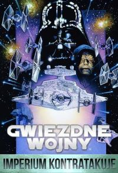

Gwiezdne Wojny - Imperium kontratakuje
chronologicznie piąta część sagi Gwiezdne wojny, powstała jako druga w 1980 roku; wyreżyserowana przez Irvina Kershnera. Akcja filmu dzieje się 3 lata po wydarzeniach ukazanych w filmie Gwiezdne wojny: część IV – Nowa nadzieja, 22 lata później niż akcja filmu Gwiezdne wojny: część III – Zemsta Sithów, 25 lat po Ataku klonów i po upływie 35 lat od wydarzeń z filmu Gwiezdne wojny: część I – Mroczne widmo.Lord Vader otrzymuje od Imperatora rozkaz odnalezienia dwudziestodwuletniego Luke’a Skywalkera, który trzy lata wcześniej zniszczył Gwiazdę Śmierci, i przeciągnięcia go na Ciemną Stronę Mocy. Vader wysyła sondy kosmiczne we wszystkie zakątki galaktyki. Tymczasem rebelianci ukrywają się w tajnej bazie na śnieżnej planecie Hoth. Księżniczka Leia wyrzuca Hanowi Solo, że decyduje się opuścić rebeliantów, by spłacić dług u Jabby. Będący już padawanem Jedi, komandor Luke Skywalker patroluje teren na swoim tauntaunie, gdy nagle zauważa – jak mniema – meteor, który uderza o śnieg. W rzeczywistości jest to sonda Imperium. Skywalker postanawia to sprawdzić, lecz zostaje napadnięty przez wampę – śniegowego stwora, który zabiera go do swej jaskini. Kapitan Han Solo natomiast, zauważając, że jego przyjaciel nie wraca i nie odpowiada na sygnał, rusza na poszukiwania.......

tekst pochodzi Wikipedii